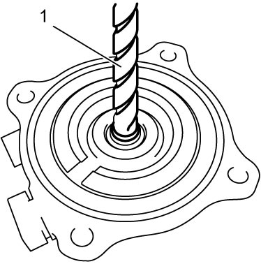

5F
| Odd Gear Clutch Control Actuator Removal and Installation |
Removal
1)Perform “Hydraulic Circuit Depressurization” function under “Utility” mode on SUZUKI scan tool referring Hydraulic Circuit Depressurization Procedure.
2)Disconnect twin clutch system unit from engine. 
3)Release lock tabs (1) and remove safety washer (2).

 "Expand image")
4)Remove thrust bearing guard nut cap (1).
 "Expand image")
5)Remove odd gear clutch control actuator thrust bearing (1).
 "Expand image")
6)Disconnect odd gear clutch position sensor connector.
7)Disconnect oil pipe from odd gear clutch control actuator.
8)Remove odd gear clutch control actuator bolts (1) and remove odd gear clutch control actuator (2) with odd gear clutch control actuator rod.
 "Expand image")
9)Remove odd gear clutch control actuator rod (1) if necessary.

 "Expand image")
10)Remove odd gear clutch control actuator rod seal (1) from inner input shaft (2).
Installation
1)Install odd gear clutch control actuator rod seal (1) using special tool and hammer.
 "Expand image")
2)Install odd gear clutch control actuator (1) with new O-ring and tighten odd gear clutch control actuator bolts (2).
 "Expand image")
3)Connect oil pipe to odd gear clutch control actuator.
4)Connect odd gear clutch position sensor connector.
5)Install odd gear clutch control actuator thrust bearing (1).
6)Check odd gear clutch control actuator thrust bearing height.
7)Install thrust bearing cap (1) and install new safety washer (2) and then fit tabs (3).
 "Expand image")
8)Connect twin clutch system unit to engine.
9)After replacing odd gear clutch control actuator, perform TCM and Clutch Initialization.